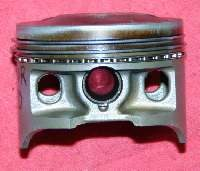

Repair / Engine noise and internals
Engine noise and internals
Problems, repairs and parts for the engine noise and internals.





Problems
- Rumbling or growling from inside the engineDo not ride
- Rattling noise from the cam chain areaRide with care
- Deep knocking from the bottom of the engineStop now
- Engine has seized or locked upStop now
- Low compressionRide with care
- Metal particles or flakes in the oilDo not ride
- New or increased engine vibrationRide with care
- Knocking from the cylinder when cold that fades when warmRide with care
- Ticking noise from the top of the engineRide with care
- Whining noise from the engineRide with care
- Two-stroke is hard to start, runs lean or smokes (crankcase leak suspected)Ride with care
- Piston crown is chewed, pitted or meltedDo not ride
Repairs
- Check the engine oil levelRider job · 5 to 10 min (estimate, includes warm-up and settling)
- Check and adjust valve clearanceHome workshop · 45 to 90 min (estimate, screw-and-locknut type)
- Find and fix an exhaust leakHome workshop · 30 to 60 min
- Check the cam chain and tensionerWorkshop job · 30 min check, 3 to 6 h if parts are replaced
- Assess the top end (cylinder, piston, valves)Workshop job · 3 to 6 h strip and measure
- Remove, check, gap and fit a spark plugRider job · 15 to 20 min
- Inspect drained oil for cluesHome workshop · 10 to 15 min (estimate, during an oil change)
- Change the engine oil and clean the strainerHome workshop · 40 to 60 min
- Test engine compressionHome workshop · 30 to 45 min
- Check engine mounting boltsHome workshop · 20 to 40 min
- Assess bottom end and internal engine damageWorkshop job · 1 h assessment; strip 4 to 10 h
- Check wheel bearingsHome workshop · 15 to 30 min
- Inspect and replace clutch plates and springsWorkshop job · 1.5 to 3 h (assessment and plate change, engine in frame)
- Assess internal gearbox faultsWorkshop job · 1 h external checks; internal inspection is usually a full day with engine removal
- Check the two-stroke oil pump and linesWorkshop job · 30 min check; 1 to 2 h with bleeding and setting
- Check air cooling (fins, airflow, mixture)Rider job · 20 to 40 min
- Do a leak-down testWorkshop job · 30 to 60 min
- Decarbonise a two-stroke exhaust and portWorkshop job · 2 to 4 h
- Find a coolant leakHome workshop · 30 to 60 min
- Check exhaust mounts and heat shieldsRider job · 15 to 30 min
- Read a spark plugHome workshop · 10 to 15 min, plus a short ride
- Check chassis fastenersHome workshop · 30 to 60 min
- Check and adjust chain slackRider job · 20 to 30 min